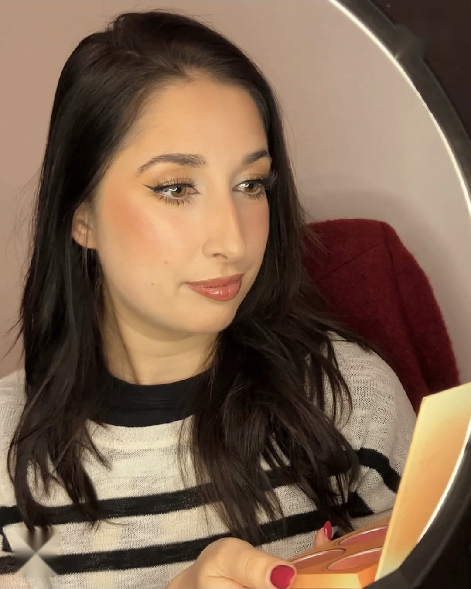
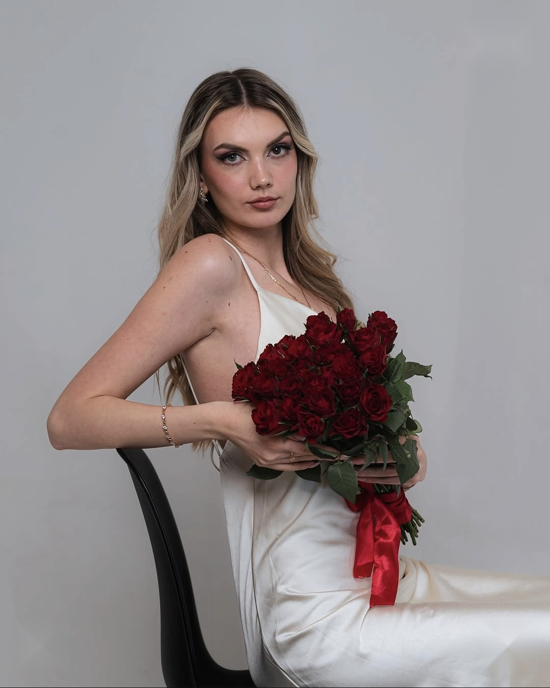
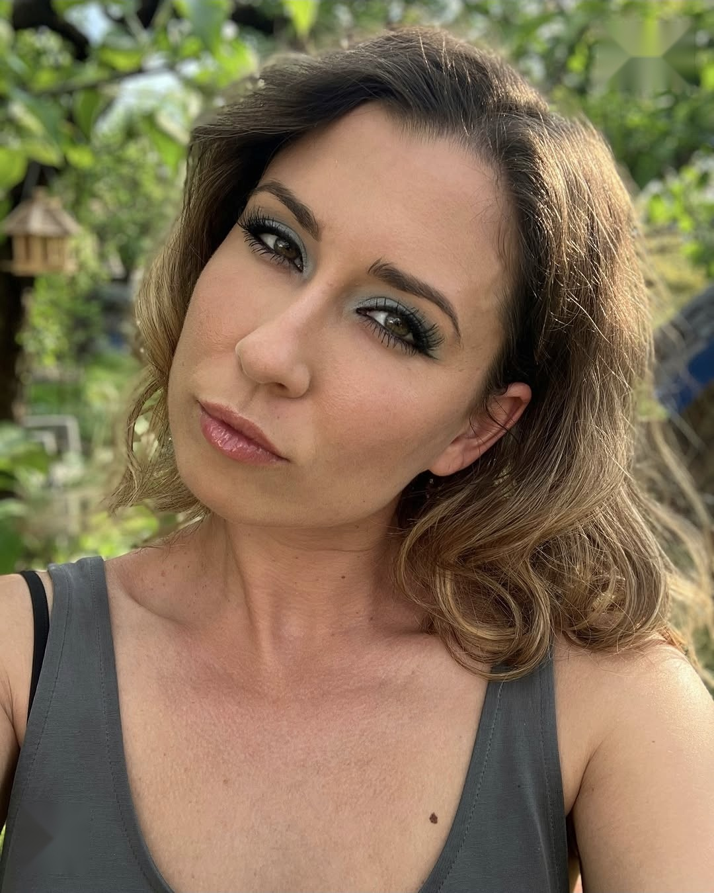
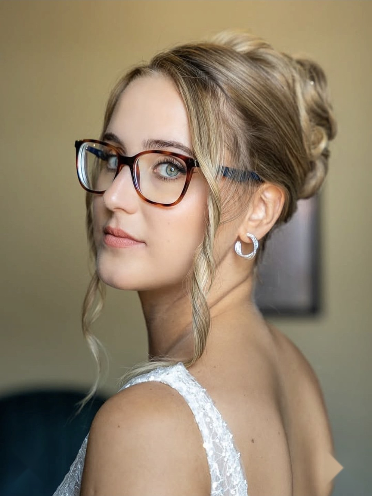
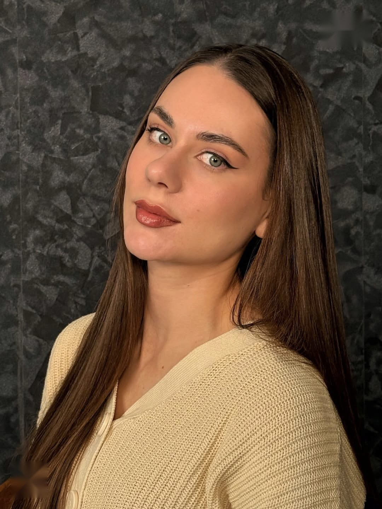
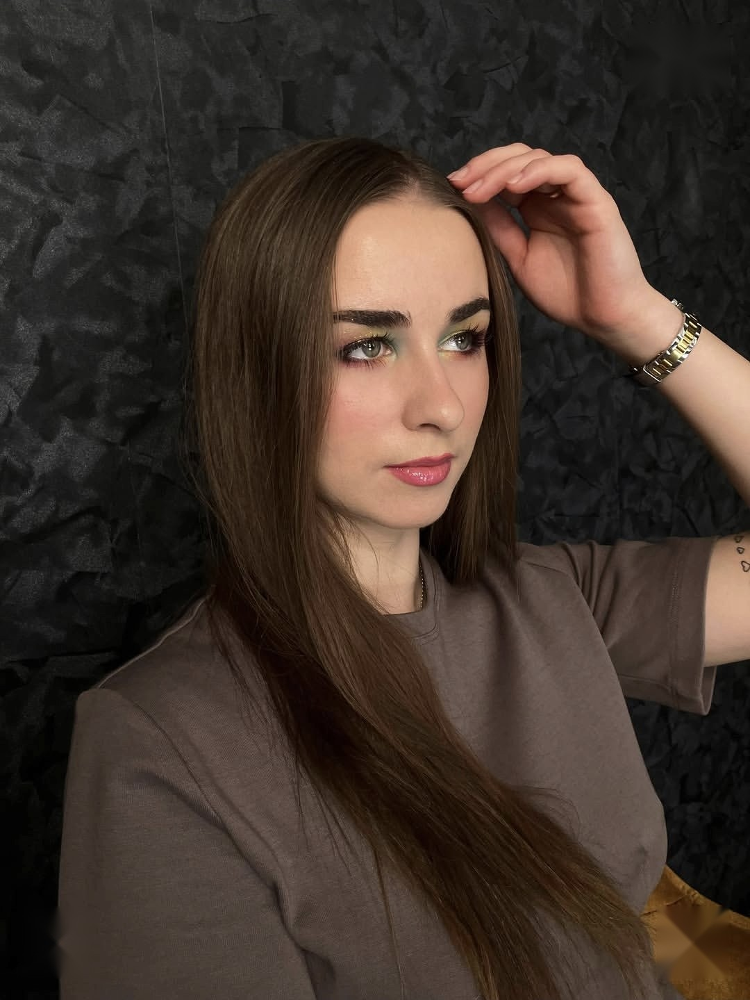
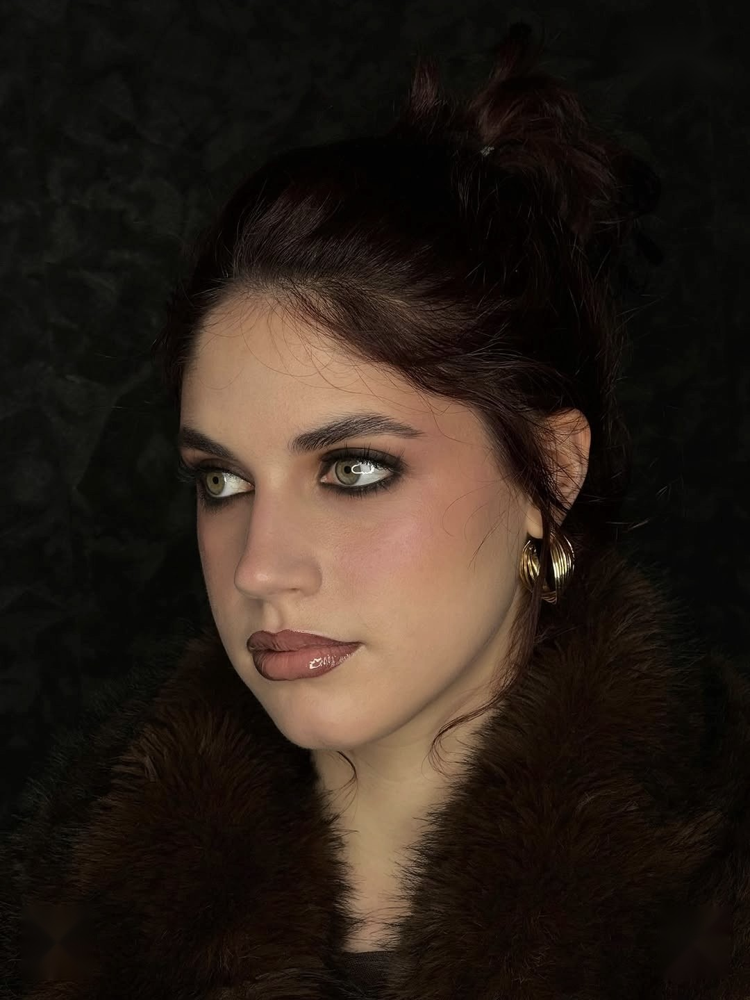
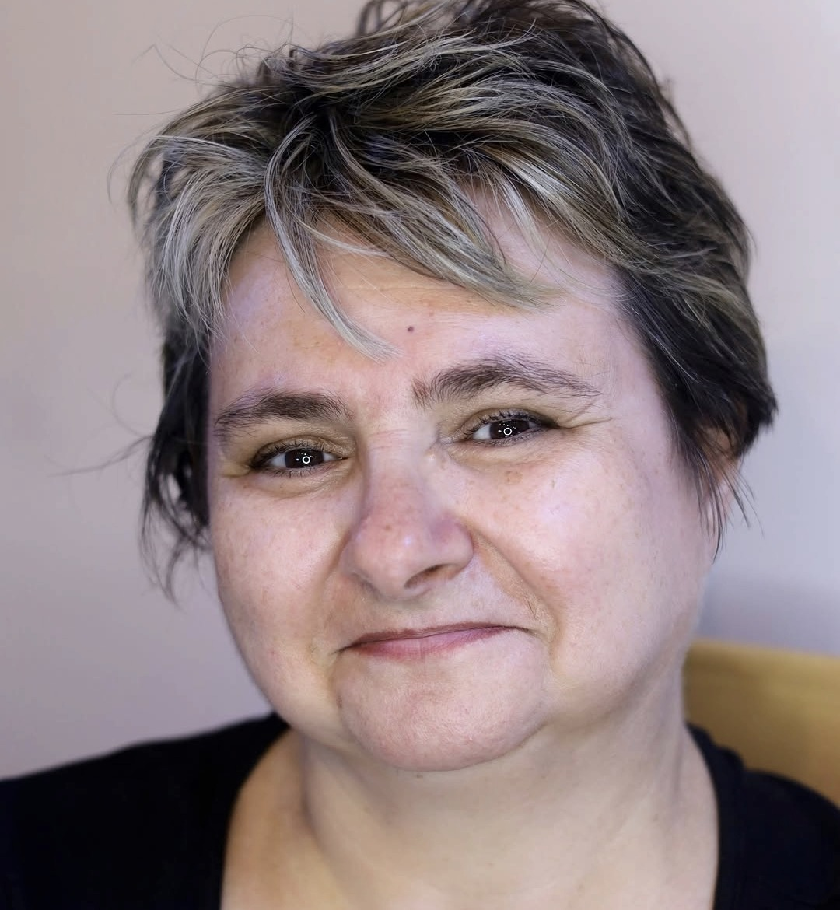
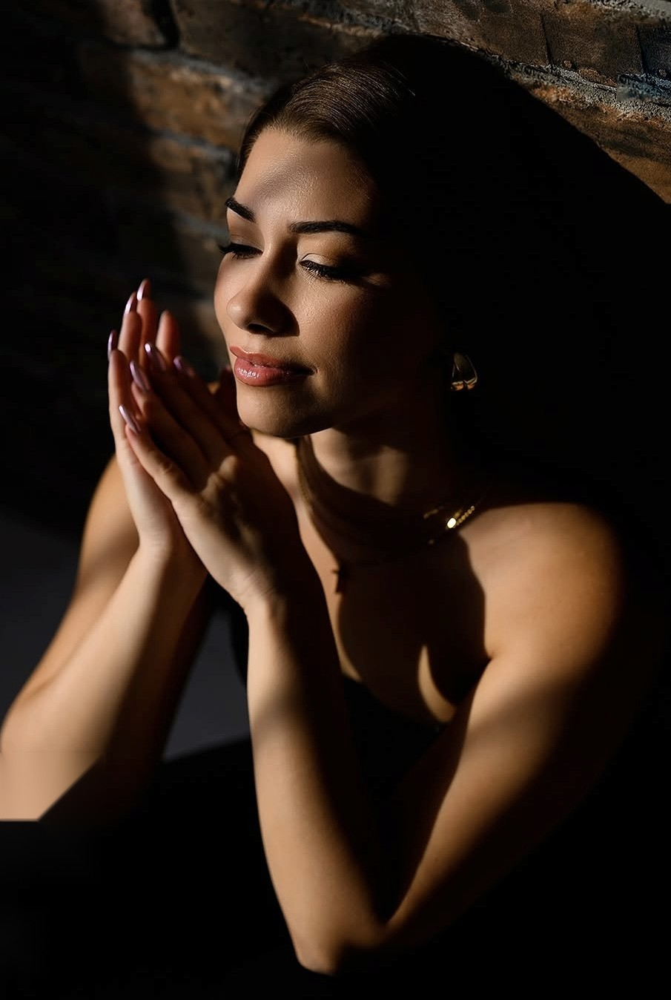

Online időpontfoglalás néhány kattintással.
Válogatás a legkedvesebb sminkekből.








Smink: Dóra Makeup · Fotó: Laura Konya Photography
Szolgáltatásaim között a prémium mindennapi, az alkalmi és a tartós menyasszonyi sminkek mellett a személyre szabott sminktanácsadást is megtalálod.
PROFESSZIONÁLIS SMINK SZOLGÁLTATÁSOK
Ha egy természetes, friss bőrkép a célod, ez a szolgáltatás tökéletes választás! 45–60 perc alatt varázsolunk el arcformázással, szemöldök formázással és szempillaspirállal!
Egy különleges eseményre készülsz? Fedezd fel a különböző trendeket, mint a smokey eye vagy a gyöngyök használata! 60–120 perc alatt álmodjuk meg a tökéletes megjelenést.
Tervezzük meg együtt a Nagy Napodat! A próbasmink során bőr előkészítési tippeket is kapsz. 80–120 perc alatt megtaláljuk a legjobb megoldást!
A nagy napra szánt sminked, a próbasmink alapján, mini arcmasszázzsal, hogy a stressz távol maradjon! 80–120 perc alatt a legszebb énedet hozom ki belőled.
SZEMÉLYRE SZABOTT TUDÁS. MAGABIZTOS MEGJELENÉS.
A tökéletes alapok elsajátítása a mindennapokra. Megismerjük az arcformádat és bőrtípusodat, és lépésről lépésre felépítjük a hozzád illő természetes sminket, amit otthon is könnyedén alkalmazhatsz.
Komplett nappali és alkalmi smink oktatás az arcformád, szemformád és bőrtípusod figyelembevételével. Megtanuljuk a számodra előnyös technikákat, színeket, valamint a műszempilla felhelyezés alapjait is.
Teljes körű sminkoktatás: nappali, alkalmi és glam sminkek, részletes arc-, szem-, bőrtípus- és színtípus-elemzéssel. Műszempilla felhelyezés oktatás és személyre szabott termék- és eszközajánlás.
TERMÉSZETES SZÉPSÉG. VALÓDI PILLANATOK.
Professzionális smink és természetes fényű fotózás – egy helyen, egy élményben. Hogy a kamera előtt is önmagad lehess.
Tanulmányaimat Fábián Éva alap, haladó és menyasszonyi workshopján, illetve Pető Detti Sminkiskolájában végeztem.
Pető Detti Sminkiskola
Fábián Éva
Fábián Éva és Iványi Mercédesz
Professzionális és kedvelt termékek egyaránt.

Számomra a smink nem elfed, hanem kiemel. Azt szeretném, hogy amikor belenézel a tükörbe, önmagadat lásd, csak egy kicsit magabiztosabban. Legyen szó természetes hétköznapi sminkről, különleges estéről, a nagy napodról vagy egy fotózásról, mindig az arcvonásaidhoz, a bőrtípusodhoz és az elképzeléseidhez igazítom.
Saját stúdióban várlak, ahol nyugodtan, kényelmesen készülhetsz. Ha viszont nem szeretnél elindulni, házhoz is megyek: akár az esküvőd reggelén, akár egy ünnepi készülődéshez. A kiszállás díját a Szolgáltatásoknál találod.
Ha pedig szeretnéd megtanulni, hogyan sminkelj magadnak, a sminktanácsadáson lépésről lépésre megmutatom.
3346 Bélapátfalva, Hársas utca 2.
Nagyon profi munkát végzett, teljesen meg voltam elégedve.:)
Lenyűgöző,profi tartós sminket kaptam!Szívből ajánlom! 💗
A foglalás a Notinón keresztül történik.
Foglalj időpontot a Notinón